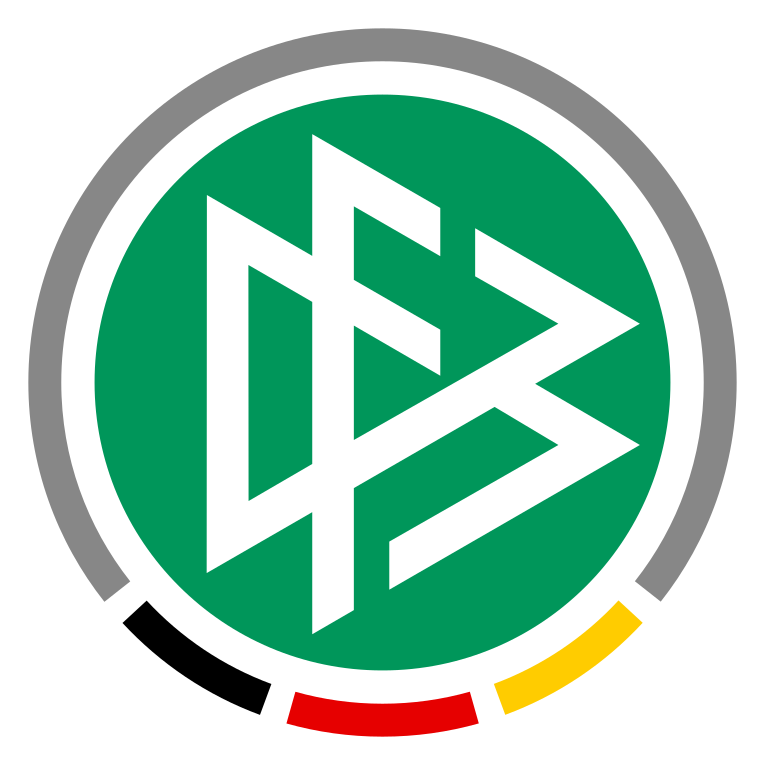

Kathleen Bartho
Unternehmerin · Management- & Leadership-Consultant · Coach
„Ganzheitlich und wirtschaftlich denken: zuerst die Menschen und ihre Bedürfnisse, dann Abläufe und Organisation, alles ausgerichtet am Kerngeschäft.“
Über mich
Ich bin in erster Linie Unternehmerin. Mit 99active baue ich ein lokales Netzwerk mit digitaler Plattform auf. Meine Beratungsprojekte finanzieren dieses Vorhaben, und sie halten mich nah an der Praxis großer Organisationen. Was ich im eigenen Unternehmen ausprobiere, nehme ich in Projekte mit, und umgekehrt. Auf eine Rolle lege ich mich dabei nicht fest: Je nach Situation bin ich Unternehmerin, Beraterin oder Coach.
Mein Blick ist immer derselbe, ob im eigenen Unternehmen oder beim Kunden: Ich schaue zuerst auf die Menschen und was sie brauchen. Danach kommen Abläufe, Organisation und die Zahlen. Und alles muss zum Kerngeschäft passen.
Angefangen habe ich 1998 in der Energiewirtschaft, in der SAP-Abrechnung der EnBW. Später kamen der Energiehandel bei E.ON, eine Bankenfusion bei der DVB, die Digitaltochter des DFB und eine große Cloud- und Plattformtransformation bei adidas hinzu. In fast allen Stationen ging es darum, gewachsene Abläufe zu ordnen, Fachbereich und IT an einen Tisch zu holen und Entscheidungen vorzubereiten, die tragen. Meine Ausbildung als Kunst- und Kreativtherapeutin prägt, wie ich mit Teams arbeite, gerade wenn es anstrengend wird.
Woran ich arbeite
SAP und Energiewirtschaft
Acht Jahre SAP IS-U im Tagesgeschäft, danach SAP aus Sicht von Controlling, Finance und Projektleitung bis hin zu S/4HANA Utilities und EEG Billing. Ich kenne Abrechnung, Marktkommunikation und Netznutzung von innen.
Ausschreibungen
Ich habe Ausschreibungen für Plattformen, SAP und Auditleistungen vorbereitet und bis zur Finalisierung begleitet. Dabei übersetze ich fachliche Anforderungen in Unterlagen, auf die Anbieter vergleichbar antworten können.
Prozesse und Organisation
Prozessaufnahme mit den Menschen, die die Arbeit machen, dazu Zielbilder, Rollen und Verantwortlichkeiten. Ich arbeite mit BPMN 2.0 und gängigen Modellierungswerkzeugen, vor allem aber im Gespräch.
Controlling und Steuerung
IT-Budgets, Forecasts, Kostenstellen- und Profitcenter-Strukturen, Reporting für Geschäftsführung und Lenkungskreise. Zahlen, die man versteht, sind die Grundlage für gute Entscheidungen.
Teams und Leadership
Leadership-Beratung für Führungskräfte, Teamplanung, Recruiting und Onboarding, Change-Begleitung und Moderation. Bei adidas habe ich geholfen, ein großes Plattform-Team aufzubauen.
Go-to-Market und eigene Systeme
Bei 99active führe ich die Go-to-Market-Strategie und baue unsere eigenen Systeme. Effiziente Dokumentation und automatisierte Prozesse sorgen dafür, dass wenig Handarbeit nötig ist. Diese Erfahrung bringe ich auch in Projekte ein.
99active
99active ist mein eigentliches unternehmerisches Ziel. Wir bringen Menschen über lokale Erlebnisse zusammen: Gastgeber bieten Workshops, Touren und Treffen an, Teilnehmende buchen sie über die Plattform. Der erste Launch war 2021. Aus den Erfahrungen ist 99active 2.0 entstanden, gestartet im Februar 2026.
Meine Hauptrolle ist derzeit eine Go-to-Market-Strategie, die auf Skalierbarkeit ausgelegt ist. Wir bauen zuerst das Netzwerk auf und entwickeln die Plattform entlang dessen, was die Menschen brauchen. Dazu baue ich eigene Systeme wie das 99active CRM, damit im Hintergrund vieles automatisch läuft und vorne Zeit für die Menschen bleibt.
Stationen



Bundeswehr Bekleidungsmanagement
Management Consultant
Ich arbeite an einer effizienten Daten-Dokumentation und an der Personalbedarfssteuerung.
Stadtwerke Flensburg
Management Consultant · Kaufmännischer Bereich
Ich habe die Prozessaufnahme im kaufmännischen Bereich geleitet, war Projektleiterin für SAP EEG Billing und habe die Projektleitung SAP S/4HANA Utilities als Coach begleitet.
DVB Bank
Senior Consultant GRC & Organisationsintegration
Nach einer Fusion habe ich Prozesse, Systeme und Organisation zusammengeführt und ein Governance-Framework aufgebaut.
adidas Global IT
Leadership Consultant des SVP Platform Engineering · Program Lead
adidas ging in dieser Zeit in die Cloud und baute dafür ein großes Platform-Engineering-Team auf. Ich habe den SVP beraten und das Transformationsprogramm geleitet, von einer SAP-HANA-Ausschreibung bis zu Teamplanung, Recruiting und Onboarding.
DFB Medien
Senior Consultant für die Geschäftsführung
Im Auftrag der Geschäftsführung habe ich Projekt- und Prozessmanagement eingeführt und eine EU-Ausschreibung vorbereitet und bis zur Finalisierung begleitet.
E.ON Global Energy Trading
Senior Consultant Risk & Compliance
Im Energiehandel habe ich ein Risk- und Compliance-System aufgebaut und ein internes Kontrollsystem eingeführt.
EnBW
Abrechnung · IT Controlling Director · Head of ICS & Compliance · Senior Consultant KPI & PMO
Hier habe ich die Energiewirtschaft von der Pike auf gelernt: zuerst acht Jahre Abrechnung in SAP IS-U, dann das IT-Controlling und die Einführung eines GRC-Systems. Später kam ich als Beraterin für KPI-Systeme und PMO zurück.
Ausbildung
- Diplom-Kauffrau für Europäische Wirtschaft (FH)
- Kunst- und Kreativtherapeutin
Kontakt
Wenn Sie sich über ein Vorhaben, ein Projekt oder 99active austauschen möchten, schreiben Sie mir gern.
Impressum
Kathleen Bartho
Unternehmerin · Management- & Leadership-Consulting · Coaching
Werkstraße 2
76477 Elchesheim-Illingen
Kathleen@Kathleen-Bartho.de
+49 7245 9471861
+49 176 42 57 34 93
USt-ID DE280103988